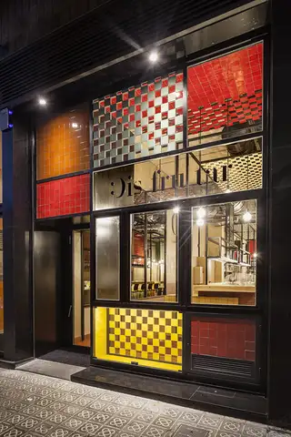
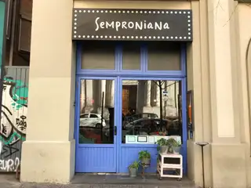

Restaurants destacats
En aquesta pàgina es mostra una selecció dels restaurants més emblemàtics d'arreu del territori, especialitzats en plats típics de la cuina catalana. Clica en qualsevol de les targetes per accedir al seu lloc web oficial.
Celler de Can Roca
Girona
Disfrutar
Barcelona
Semproniana
Barcelona